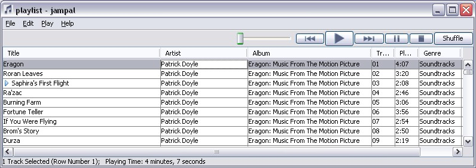

The Playlist has all of the functionality of the library window. It is a compact version of the library, specifically designed for playing a sequence of tracks. All operations that can be done in the library can also be done here.
The title of a song that is playing is displayed in the title bar as there is insufficient space in the top of the window.
If you select "edit track tags" while playing, each tag will display as the song is played.
When playing a song to the end here, it automatically moves to the next song, which it does not do when playing a song in the library.
If on trying to play a song the file name is incorrect, the program searches the main library based on song name and artist. If it is found the playlist is updated and the song is played. This process enables the playing of "m3j" playlists and helps in case song files are renamed or moved. This search can also be performed on one or more songs by using the "Validate Tracks" option.
"Follow" Option
This is a feature to help you with playing medleys and introductions.
Sometimes on a CD there is a very short track which is actually an introduction to the following track. Other times there are several short tracks in a row, which are actually a medley of songs. In these cases it can be irritating to just hear the introduction or to just hear one of the songs from the medley. If you randomize your playlist or just select a few songs it may happen that you get an introduction separated from the next track.
By creating a "User Defined Text Information" frame with a description of jampal (all lower case), you can solve this problem. If you enter F into that frame, jampal will always play the following song after it has played this one. When the song with "F" starts, jampal loads the subsequent song or songs into the playlist, and plays them all continuously without a pause. If Announcements are turned on, it announces all of the songs before starting on the first one. To do this it searches the playlist and the library for the matching album name and the next sequential track number.